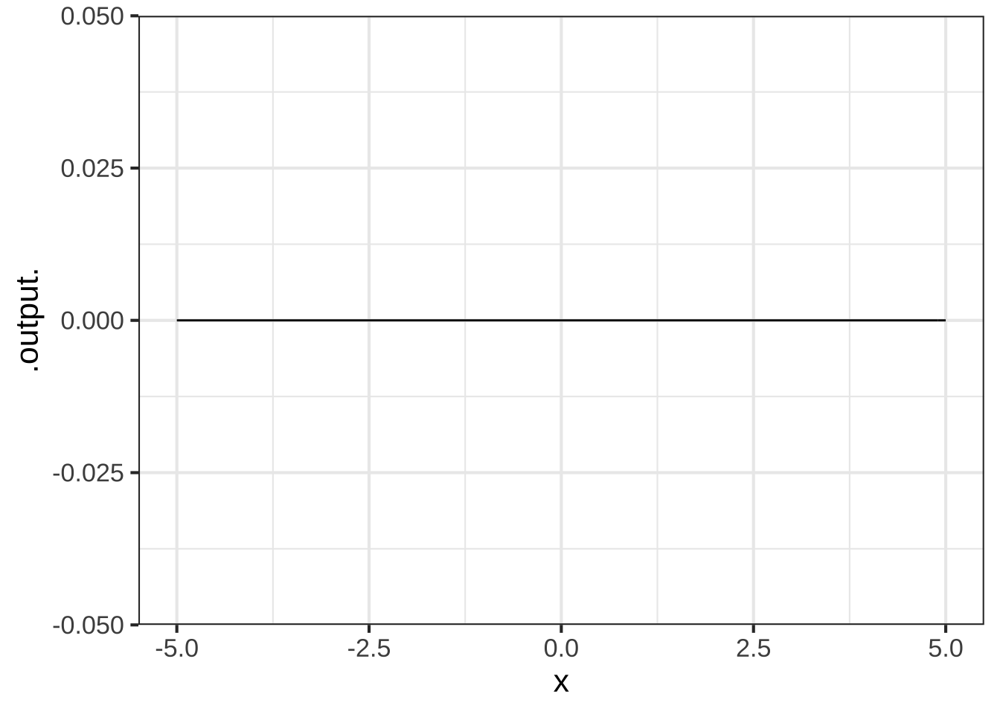

Chapter 26 Polynomials
A big part of the high-school algebra curriculum is about polynomials. In some ways, this is appropriate since polynomials played an outsized part in the historical development of mathematical theory. Indeed, the so-called “Fundamental theorem of algebra” is about polynomials.44
For modelers, polynomials are a mixed bag. They are very widely used in modeling. Sometimes this is entirely appropriate, for instance the low-order polynomials that are the subject of Chapter 25. The problems come when high-order polynomials are selected for modeling purposes. Building a reliable model with high-order polynomials requires a deep knowledge of mathematics, and introduces serious potential pitfalls. Modern professional modelers learn the alternatives to high-order polynomials, but newcomers often draw on their experience in high-school and give unwarranted credence to polynomials. This chapter attempts to guide you to the ways you are likely to see polynomials in your future work and to help you avoid them when better alternatives are available.
26.1 Basics of polynomials with one input
A polynomial is a linear combination of a particular class of functions: power-law functions with non-negative, integer exponents: 1, 2, 3, …. The individual functions are called monomials, a word that echoes the construction of chemical polymers out of monomers; for instance, the material polyester is constructed by chaining together a basic chemical unit called an ester.
In one variable, say \(x\), the monomials are \(x^1, x^2, x^3\), and so on. (There’s also \(x^0\), but that’s better thought of as the constant function.) An n-th order polynomial has monomials up to exponent \(n\). For example, the form of a third-order polynomial is \[a_0 + a_1 x^1 + a_2 x^2 + a_3 x^3\]
The domain of polynomials, like the power-law functions they are assembled from, is the real numbers, that is, the entire number line \(-\infty < x < \infty\). But for the purposes of understanding the shape of high-order polynomials, it’s helpful to divide the domain into three parts: a wriggly domain at the center and two tail domains to the right and left of the center.

Figure 26.1: A \(n\)th-order polynomial can have up to \(n-1\) critical points that it wriggles among. A 7-th order polynomial is shown here in which there are six local maxima or minima alternatingly.
Figure 26.1 shows a 7th order polynomial—that is, the highest-order term is \(x^7\). In one of the tail domains the function value heads off to \(\infty\), in the other to \(-\infty\). This is a necessary feature of all odd-order polynomials: 1, 3, 5, 7, …
In contrast, for even-order polynomials (2, 4, 6, …) the function value in the two tail domains go in the same direction, either both to \(\infty\) (Hands up!) or both to \(-\infty\).
In the wriggly domain in Figure 26.1, there are six argmins or argmaxes.
An \(n\)th-order polynomial can have up to \(n-1\) extrema.
Note that the local polynomial approximations in Chapter 25 are at most 2nd order and so there is at most 1 wriggle: a unique argmax. If the approximation does not include the quadratic terms (\(x^2\) or \(y^2\)) then there is no argmax for the function.
26.2 Multiple inputs?
High-order polynomials are rarely used with multiple inputs. One reason is the proliferation of coefficients. For instance, here is the third-order polynomial in two inputs, \(x\), and \(y\). \[\underbrace{b_0 + b_x x + b_y y}_\text{first-order terms} + \underbrace{b_{xy} x y + b_{xx} x^2 + b_{yy} y^2}_\text{second-order terms} + \underbrace{b_{xxy} x^2 y + b_{xyy} x y^2 + b_{xxx} x^3 + b_{yyy} y^3}_\text{third-order terms}\]
This has 10 coefficients. With so many coefficients it’s hard to ascribe meaning to any of them individually. And, insofar as some feature of the function does carry meaning in terms of the modeling situation, that meaning is spread out and hard to quantify.
26.3 High-order approximations
The potential attraction of high-order polynomials is that, with their wriggly interior, they can take on a large number of appearances. This chameleon-like behavior has historically made them the tool of choice for understanding the behavior of approximations. That theory has motivated the use of polynomials for modeling patterns in data, but, paradoxically, has shown that high-order polynomials should not be the tool of choice for modeling data.&[The mathematical background needed for those better tools won’t be available to us until Block 5, when we explore linear algebra.]
Polynomial functions lend themselves well to calculations, since the output from a polynomial function can be calculated using just the basic arithmetic functions: addition, subtraction, multiplication, and division. To illustrate, consider this polynomial: \[g(x) \equiv x - \frac{1}{6} x^3\] Since the highest-order term is \(x^3\) this is a third-order polynomial. (As you’ll see, we picked these particular coefficients, 0, 1, 0, -1/6, for a reason.) With such simple coefficients the polynomial is easy to handle by mental arithmetic. For instance, for \(g(x=1)\) is \(5/6\). Similarly, \(g(x=1/2) = 23/48\) and \(g(x=2) = 2/3\). A person of today’s generation would use an electronic calculator for more complicated inputs, but the mathematicians of Newton’s time were accomplished human calculators. It would have been well within their capabilities to calculate, using paper and pencil, \(g(\pi/4) = 0.7046527\).45
Our example polynomial, \(g(x) \equiv x - \frac{1}{6}x^3\), graphed in color in Figure 26.2, doesn’t look exactly like the sinusoid. If we increased the extent of the graphics domain, the disagreement would be even more striking, since the sinusoid’s output is always in \(-1 \leq \sin(x) \leq 1\), while the polynomial’s tails are heading off to \(\infty\) and \(-\infty\). But, for a small interval around \(x=0\), exactly aligns with the sinusoid.

Figure 26.2: The polynomial \(g(x) \equiv x -x^3 / 6\) is remarkably similar to \(\sin(x)\) near \(x=0\).
It’s clear from the graph that the approximation is excellent near \(x=0\) and gets worse as \(x\) gets larger. The approximation is poor for \(x \approx \pm 2\). We know enough about polynomials to say that the approximation will not get better for larger \(x\); the sine function has a range of \(-1\) to \(1\), while the left and right tails of the polynomial are heading off to \(\infty\) and \(-\infty\) respectively.
One way to measure the quality of the approximation is the error \({\cal E}(x)\) which gives, as a function of \(x\), the difference between the actual sinusoid and the approximation: \[{\cal E}(x) \equiv |\strut\sin(x) - g(x)|\] The absolute value used in defining the error reflects our interest in how far the approximation is from the actual function and not so much in whether the approximation is below or above the actual function. Figure 26.3 shows \({\cal E}(x)\) as a function of \(x\). Since the error is the same on both sides of \(x=0\), only the positive \(x\) domain is shown.

Figure 26.3: The error \({\cal E}(x)\) of \(x - x^3/6\) as an approximation to \(\sin(x)\). Top panel: linear scale. Bottom panel: on a log-log scale.
Figure 26.3 shows that for \(x < 0.3\), the error in the polynomial approximation to \(\sin(x)\) is in the 5th decimal place. For instance, \(\sin(0.3) = 0.2955202\) while \(g(0.3) = 0.2955000\).
That the graph of \({\cal E}(x)\) is a straight-line on log-log scales diagnoses \({\cal E}(x)\) as a power law. That is: \({\cal E}(x) = A x^p\). As always for power-law functions, we can estimate the exponent \(p\) from the slope of the graph. It’s easy to see that the slope is positive, so \(p\) must also be positive.
The inevitable consequence of \({\cal E}(x)\) being a power-law function with positive \(p\) is that \(\lim_{x\rightarrow 0} {\cal E}(x) = 0\). That is, the polynomial approximation \(x - \frac{1}{6}x^3\) is exact as \(x \rightarrow 0\).
Throughout this book, we’ve been using straight-line approximations to functions around an input \(x_0\). \[g(x) = f(x_0) + \partial_x f(x_0) [x-x_0]\] One way to look at \(g(x)\) is as a straight-line function. Another way is as a first-order polynomial. This raises the question of what a second-order polynomial approximation should be. Rather than the polynomial matching just the slope of \(f(x)\) at \(x_0\), we can arrange things so that the second-order polynomial will also match the curvature of the \(f()\). Since the curvature involves only the first and second derivatives of a function, the polynomial constructed to match both the first and the second derivative will necessarily match the slope and curvature of \(f()\). This can be accomplished by setting the polynomial coefficients appropriately.
Start with a general, second-order polynomial centered around \(x_0\): \[g(x) \equiv a_0 + a_1 [x-x_0] + a_2 [x - x_0]^2\] The first- and second-derivatives, evaluated at \(x=x_0\) are: \[\partial_x g(x)\left.{\Large\strut}\right|_{x=x_0} = a_1 + 2 a_2 [x - x_0] \left.{\Large\strut}\right|_{x=x_0} = a_1\] \[\partial_{xx} g(x)\left.{\Large\strut}\right|_{x=x_0} = 2 a_2\] Notice the 2 in the above expression. When we want to write the coefficient \(a_2\) in terms of the second derivative of \(g()\), we’ll end up with
\[a_2 = \frac{1}{2} \partial_{xx} g(x)\left.{\Large\strut}\right|_{x=x_0}\]
To make \(g(x)\) approximate \(f(x)\) at \(x=x_0\), we need merely set \[a_1 = \partial_x f(x)\left.{\Large\strut}\right|_{x=x_0}\] and \[a_2 = \frac{1}{2} \partial_{xx} f(x) \left.{\Large\strut}\right|_{x=x_0}\] This logic can also be applied to higher-order polynomials. For instance, to match the third derivative of \(f(x)\) at \(x_0\), set \[a_3 = \frac{1}{6} \partial_{xxx} f(x) \left.{\Large\strut}\right|_{x=x_0}\] Remarkably, each coefficient in the approximating polynomial involves only the corresponding order of derivative. \(a_1\) involves only \(\partial_x f(x) \left.{\Large\strut}\right|_{x=x_0}\); the \(a_2\) coefficient involves only \(\partial_{xx} f(x) \left.{\Large\strut}\right|_{x=x_0}\); the \(a_3\) coefficient involves only \(\partial_{xx} f(x) \left.{\Large\strut}\right|_{x=x_0}\), and so on.
Now we can explain where the polynomial that started this section, \(x - \frac{1}{6} x^3\) came from and why those coefficients make the polynmomial approximate the sinusoid near \(x=0\).
| Order | \(\sin(x)\) derivative | \(x - \frac{1}{6}x^3\) derivative |
|---|---|---|
| 0 | \(\sin(x) \left.{\Large\strut}\right|_{x=0} = 0\) | \(\left( 1 - \frac{1}{6}x^3\right)\left.{\Large\strut}\right|_{x=0} = 0\) |
| 1 | \(\cos(x) \left.{\Large\strut}\right|_{x=0} = 1\) | \(\left(1 - \frac{3}{6} x^2\right) \left.{\Large\strut}\right|_{x=0}= 1\) |
| 2 | \(-\sin(x) \left.{\Large\strut}\right|_{x=0} = 0\) | \(\left(- \frac{6}{6} x\right) \left.{\Large\strut}\right|_{x=0} = 0\) |
| 3 | \(-\cos(x) \left.{\Large\strut}\right|_{x=0} = -1\) | \(- 1\left.{\Large\strut}\right|_{x=0} = -1\) |
| 4 | \(\sin(x) \left.{\Large\strut}\right|_{x=0} = 0\) | \(0\left.{\Large\strut}\right|_{x=0} = 0\) |
The first four derivatives of \(x - \frac{1}{6} x^3\) exactly match, at \(x=0\), the first four derivatives of \(\sin(x)\).
The polynomial constructed by matching successive derivatives of a function \(f(x)\) at some input \(x_0\) is called a Taylor polynomial.
Let’s construct a 3rd-order Taylor polynomial approximation to \(f(x) = e^x\) around \(x=0\).
We know it will be a 3rd order polynomial:
\[g_{\exp}(x) \equiv a_0 + a_1 x + a_2 x^2 + a_3 x^3\]
The exponential function is particularly nice for examples because the function value and all it’s derivatives are identical: \(e^x\). So
\[f(x= 0) = 1\]
\[ \partial_x f(x=0) = 1\]
\[\partial_{xx} f(x=0) = 1\]
\[\partial_{xxx} f(x=0) = 1\] and so on.
The function value and derivatives of \(g_{\exp}(x)\) at \(x=0\) are: \[g_{\exp}(x=0) = a_0\] \[\partial_{x}g_{\exp}(x=0) = a_1\] \[\partial_{xx}g_{\exp}(x=0) = 2 a_2\]
\[\partial_{xxx}g_{\exp}(x=0) = 2\cdot3\cdot a_3 = 6\, a_3\] Matching these to the exponential evaluated at \(x=0\), we get \[a_0 = 1\] \[a_1 = 1\] \[a_2 = \frac{1}{2}\] \[a_3 = \frac{1}{2 \cdot 3} = \frac{1}{6}\]
Result: the 3rd-order Taylor polynomial approximation to the exponential at \(x=0\) is \[g_{\exp}(x) = 1 + x + \frac{1}{2} x^2 + \frac{1}{2\cdot 3} x^3 +\frac{1}{2\cdot 3\cdot 4} x^4\]
Figure 26.4 shows the exponential function \(e^x\) and its 3th-order Taylor polynomial approximation near \(x=0\):
Figure 26.4: The 3th-order Taylor polynomial approximation to \(e^x\) arount \(x=0\)
The polynomial is exact at \(x=0\). The error \({\cal E}(x)\) grows with increasing distance from \(x=0\):


Figure 26.5: The error from a 3rd-order Taylor polynomial approximation to \(e^x\) around \(x=0\) is a power-law function with exponent \(4\).
The plot of \(\log_{10} {\cal E}(x)\) versus \(\log_{10} | x |\) in Figure 26.5 shows that the error grows from zero at \(x=0\) as a power-law function. Measuring the exponent of the power-law from the slope of the graph on log-log axes give \({\cal E}(x) = a |x-x_0|^5\). This is typical of Taylor polynomials: for a polynomial of degree \(n\), the error will grow as a power-law with exponent \(n+1\). This means that the higher is \(n\), the faster \(\lim_{x\rightarrow x_0}{\cal E}(x) \rightarrow 0\). On the other hand, since \({\cal E}_x\) is a power law function, as \(x\) gets further from \(x_0\) the error grows as \(\left(x-x_0\right)^{n+1}\).
Brooke Taylor (1685-1731), a near contemporary of Newton, published his work on approximating polynomials in 1715. Wikipedia reports: “[T]he importance of [this] remained unrecognized until 1772, when Joseph-Louis Lagrange realized its usefulness and termed it ‘the main [theoretical] foundation of differential calculus.’”Source
{kind=link}

Figure 26.6: Brook Taylor
Due to the importance of Taylor polynomials in the development of calculus, and their prominence in many calculus textbooks, many students assume their use extends to constructing models from data. They also assume that third- and higher-order monomials are a good basis for modeling data. Both these assumptions are wrong. Least squares is the proper foundation for working with data.
Taylor’s work preceded by about a century the development of techniques for working with data. One of the pioneers in these new techniques was Carl Friedrich Gauss (1777-1855), after whom the gaussian function is named. Gauss’s techniques are the foundation of an incredibly important statistical method that is ubiquitous today: least squares. Least squares provides an entirely different way to find the coefficients on approximating polynomials (and an infinite variety of other function forms). The R/mosaic fitModel() function for polishing parameter estimates is based on least squares. In Block 5, we’ll explore least squares and the mathematics underlying the calculations of least-squares estimates of parameters.
26.4 Indeterminate forms
Let’s return to an issue that has bedeviled calculus students since Newton’s time. The example we’ll use is the function \[\text{sinc}(x) \equiv \frac{\sin(x)}{x}\]
The sinc() function (pronounced “sink”) is still important today, in part because of its role in converting discrete-time measurements (as in an mp3 recording of sound) into continuous signals.
What is the value of \(\text{sinc}(0)\)? One answer, favored by arithmetic teachers is that \(\text{sinc}(0)\) is meaningless, because it involves division by zero.
On the other hand, \(\sin(0) = 0\) as well, so the sinc function evaluated at zero involves 0/0. This quotient is called an indeterminant form. The logic is this: Suppose we assume that \(0/0 = b\) for some number \(b\). then \(0 = 0 \times b = 0\). So any value of \(b\) would do; the value of \(0/0\) is “indeterminant.”
Still another answer is suggested by plotting out sinc(\(x\)) near \(x=0\) and reading the value off the graph: sinc(0) = 1.
slice_plot(sin(x) / x ~ x, domain(x=c(-10,10)), npts=500)Figure 26.7: To judge from this plot, sin(0) = 1.
The graph of sinc() looks smooth and the shape makes sense. Even if we zoom in very close to \(x=0\), the graph continues to look smooth. We call such functions well behaved.
Compare the well-behaved sinc() to a very closely related function (which doesn’t seem to be so important in applied work): \(\frac{\sin(x)}{x^3}\).
Both \(\sin(x)/x\) and \(\sin(x) / x^3\), evaluated at \(x=0\) involve a divide by zero. Both are indeterminate forms 0/0 at \(x=0\). But the graph of \(\sin(x) / x^3\) (see Figure ??) is not we’ll behaved. \(\sin(x) / x^3\) does not have any particular value at \(x=0\); instead, it has an asymptote.
slice_plot(sin(x) / x ~ x, domain(x=c(-0.1, 0.1)), npts=500) %>%
gf_refine(scale_y_log10())Figure 26.8: Zooming in around the division by zero. Left: The graph of \(\sin(x)/x\) versus \(x\). Right: The graph of \(\sin(x)/x^2\). The vertical scales on the two graphs are utterly different.
slice_plot(sin(x) / x^3 ~ x, domain(x=c(-0.1, 0.1)), npts=500) %>%
gf_refine(scale_y_log10())Figure 26.9: Zooming in around the division by zero. Left: The graph of \(\sin(x)/x\) versus \(x\). Right: The graph of \(\sin(x)/x^2\). The vertical scales on the two graphs are utterly different.
Since both \(\sin(x)/x\left.{\Large\strut}\right|_{x=0}\) and \(\sin(x)/x^3\left. {\Large\strut}\right|_{x=0}\) involve a divide-by-zero, the answer to the utterly different behavior of the two functions is not to be found at zero. Instead, it’s to be found near zero. For any non-zero value of \(x\), the arithmetic to evaluate the functions is straight-forward. Note that \(\sin(x) / x^3\) starts its mis-behavior away from zero. The slope of \(\sin(x) / x^3\) is very large near \(x=0\), while the slope of \(\sin(x) / x\) smoothly approaches zero.
Since we’re interested in behavior near \(x=0\), a useful technique is to approximate the numerator and denominator of both functions by polynomial approximations.
- \(\sin(x) \approx x - \frac{1}{6} x^3\) near \(x=0\)
- \(x\) is already a polynomial.
- \(x^3\) is already a polynomial.
Remember, these approximations are exact as \(x\) goes to zero. So sufficiently close to zero,
\[\frac{\sin(x)}{x} = \frac{x - \frac{1}{6} x^3}{x} = 1 + \frac{1}{6} x^2\] Even at \(x=0\), there’s nothing indeterminant about \(1 + x^2/6\); it’s simply 1.
Compare this to the polynomial approximation to \(\sin(x) / x^3\): \[\frac{\sin(x)}{x^3} = \frac{x - \frac{1}{6} x^3}{x^3} = \frac{1}{x^2} - \frac{1}{6}\]
Evaluating this at \(x=0\) involves division by zero. No wonder it’s badly behaved.
The procedure for checking whether a function involving division by zero behaves well or poorly is described in the first-ever calculus textbook, published in 1697. The title (in English) is: The analysis into the infinitely small for the understanding of curved lines. In honor of the author, the Marquis de l’Hospital, the procedure is called l’Hopital’s rule.46
Conventionally, the relationship is written \[\lim_{x\rightarrow x_0} \frac{u(x)}{v(x)} = \lim_{x\rightarrow x_0} \frac{\partial_x u(x)}{\partial_x v(x)}\]
Let’s try this out with our two example functions around \(x=0\):
\[\lim_{x\rightarrow 0} \frac{\sin(x)}{x} = \frac{\lim_{x\rightarrow 0} \cos(x)}{\lim_{x \rightarrow 0} 1} = \frac{1}{1} = 1\]
\[\lim_{x\rightarrow 0} \frac{\sin(x)}{x^3} = \frac{\lim_{x\rightarrow 0} \cos(x)}{\lim_{x \rightarrow 0} 3x^2} = \frac{1}{0} \ \ \text{indeterminate}!\]
26.5 Computing with indeterminate forms
In the early days of electronic computers, division by zero would cause a fault in the computer, often signaled by stopping the calculation and printing an error message to some display. This was inconvenient, since programmers did not always forsee division-by-zero situations and avoid them.
As you’ve seen, modern computers have adopted a convention that simplifies programming considerably. Instead of stopping the calculation, the computer just carries on normally, but produces as a result one of two indeterminant forms: Inf and NaN.
Inf is the output for the simple case of dividing zero into a non-zero number, for instance:
17/0## [1] InfNaN, standing for “not a number,” is the output for more challenging cases: dividing zero into zero, or multiplying Inf by zero, or dividing Inf by Inf.
0/0## [1] NaN0 * Inf## [1] NaNInf / Inf## [1] NaNThe brilliance of the idea is that any calculation that involves NaN will return a value of NaN. This might seem to get us nowhere. But most programs are built out of other programs, usually written by other people interested in other applications. You can use those programs (mostly) without worrying about the implications of a divide by zero. If it’s important to respond in some particularly way, you can always check the result for being NaN in your own programs. (Much the same is true for Inf, although dividing a non-Inf number by Inf will return 0.)
Plotting software will often treat NaN values as “don’t plot this.” That’s why it’s possible to make a sensible plot of \(\sin(x)/x\) even when the plotting domain includes zero.
26.6 Exercises
Exercise 26.02:  3EdMBL
3EdMBL
The Taylor polynomial for \(e^x\) has an especially lovely formula: \[p(x) = 1 + \frac{x}{1!} + \frac{x^2}{2!} + \frac{x^3}{3!} + \frac{x^4}{4!} + \cdots\]
Question A In the above formula, the center \(x_0\) does not appear. Why not?
- Having a center is not a requirement for a Taylor polynomial.︎✘ This is wrong. All Taylor polynomials are expansions around some fixed center value.
- There is a center, \(x_0 = 1\), but terms like \(x_0 x^2\) were simplified to \(x^2\).︎✘ Look again at the Taylor formula at the start of this section. The basis functions are \(x-x_0, (x-x_0)^2, \ldots\), not \(x_0 x, x_0 x^2, \ldots\)
- There is a center, \(x_0 = 0\), but the terms like \((x-x_0)^2\) were simplified to \(x^2\).Nice!
Exercise 26.04: o6dP4k
Here is a Taylor polynomial: \[p(x) = e + \frac{e}{1!} (x-1) + \frac{e}{2!} (x-1)^2 + \cdots\]
Question A Where is the center \(x_0\) of this polynomial?
\(x_0 = -2\)︎✘ \(x_0 = -1\)︎✘ \(x_0 = 0\)︎✘ \(x_0=1\)\(\heartsuit\ \) \(x_0 = 2\)︎✘
Question B Your roommate suggests that \(p(x)\) is a Taylor expansion of \(e^x\) around \(x=1\). Is he right?
- No, a polynomial doesn’t have functions like \(e\).︎✘ \(e\) is not a function, it’s just a number, 2.718282….
- Yes. The center is \(x_0 = 1\).Good.
- Not really. The formula suggests that the center is \(x_0=1\) but the coefficients are wrong.︎✘ The coefficients are right.
Exercise 26.06: Co1Ekt
Consider the function \(f(x) \equiv (x - 3)^2\).
Question A Using ordinary algebra, \(f(x)\) can be expanded as \((x^2 - 6 x -9)\). Is \[p(x) = -9 - 6 x + x^2\] a Taylor polynomial expansion of \(f(x)\)?
- Yes, with a center at \(x_0 = 0\)Right!
- Yes, with a center at \(x_0 = 3\)︎✘
- No, because there are no factorials involved︎✘ The factorials are already built-in to the coefficients.
Exercise 26.08: llX7EF
Here’s the Taylor polynomial expansion of \(\sin(x)\) about a center \(x_0\): \[p(x) = 1/2 - \frac{\sqrt{3}/{2}}{2!} (x - x_0)^2 + \frac{1/2}{4!} (x - x_0)^4 + \cdots\] Question A Which of these is the numerical value of \(x_0\)? (Hint: Remember that the coefficients involve the function and its derivatives evaluated at \(x_0\) as described in Section 26.3.)
\(\pi/6\)\(\heartsuit\ \) \(\pi/3\)︎✘ \(\pi/2\)︎✘ \(\pi\)︎✘
Exercise 26.10: ecdVKx
With very high-order derivatives, it can be awkward to use a notation with repeated subscripts, like \(\partial_{xxxxx} f(x)\). Another notation often encountered is \(f^{(5)}\), where the integer in the superscript tells the order of the derivative. We’ll use that notation in this problem.
For a function \(f(x)\) and its derivatives \(f^{(1)}(x)\), \(f^{(2)}(x)\), … the Taylor polynomial \(p(x)\) centered on \(x_0\) is
\[p(x) \equiv f(x_0) + \frac{f^{(1)}(x_0)}{1!} (x - x_0)^1 + \frac{f^{(2)}(x_0)}{2!} (x - x_0)^2 + \cdots\]
A Taylor polynomial, like all polynomials, is a linear combination of basic functions.
Question A Which of these are the basic functions being linearly combined in a Taylor polynomial?
- \(f(x), f^{(1)}(x), f^{(2)}(x), \ldots\)︎✘ You won’t find any of these in the definition of \(p(x)\) given above. You’re confusing \(x\) with \(x_0\).
- \(f(x_0), f^{(1)}(x_0), f^{(2)}(x_0), \ldots\)︎✘ These are not functions of \(x\). They are numbers computed by evaluating a function at the center point \(x_0\).
- \(f(x_0), \frac{f^{(1)}(x_0)}{1!}, \frac{f^{(2)}(x_0)}{2!}, \ldots\)︎✘ These are not functions of \(x\). They are numbers computed by evaluating a function at the center point \(x_0\).
- \((x-x_0), (x - x_0)^2, \ldots\)Correct. These are the only places where the variable \(x\) appears in the Taylor formula.
Exercise 26.12: 682lsB
Each of the three functions graphed below is a simple power-law function that can be written \(\left[x-x_0\right]^n\). The three functions have different values for \(x_0\) and for \(n\).
 Question A For the blue function, what is \(x_0\)?
0︎✘ 1︎✘ 2︎✘ 3︎✘ 4\(\heartsuit\ \) 5︎✘
Question B For the blue function, what is the order of the polynomial?
0︎✘ 1\(\heartsuit\ \) 2︎✘ 3︎✘ 4︎✘ 5︎✘
Question C For the orange function, what is \(x_0\)?
0︎✘ 1︎✘ 2\(\heartsuit\ \) 3︎✘ 4︎✘ 5︎✘
Question D For the orange function, what is the order of the polynomial?
0︎✘ 1︎✘ 2\(\heartsuit\ \) 3︎✘ 4︎✘ 5︎✘
Question E For the green function, what is \(x_0\)?
-2︎✘ -1\(\heartsuit\ \) 0︎✘ 1︎✘ 2︎✘ 3︎✘
Question F For the green function, what is the order of the polynomial?
0︎✘ 1︎✘ 2︎✘ 3\(\heartsuit\ \) 4︎✘ 5︎✘
Exercise 26.14: cQT2v6
At \(x=0\), the value of \(x \ln(x)\) is indeterminate, having the form \(0 \cdot \infty\).
Using a sandbox, plot out \(x \ln(x)\) over the domain \(0 < x < \frac{1}{2}\).
Question A From the graph, determine \(\lim_{x\rightarrow 0} x \ln(x()\). Choose the correct answer.
-0.2︎✘ 0\(\heartsuit\ \) 0.1︎✘ 0.5︎✘ not well behaved︎✘
Use l’Hopital’s rule to confirm that \(\lim_{x\rightarrow 0} x \ln(x()\) exists. Here, the rule has the form:
\[\lim_{x\rightarrow 0} x \cdot \ln(x) = [\lim_{x\rightarrow 0} \partial_x x] \cdot [\lim_{x\rightarrow 0} \partial_x \ln(x)]\]
Question B Does the application of l’Hopital’s rule confirm the result from graphing the function?
- YesRight!
- No︎✘ Aren’t you getting \(\frac{1}{1/x} = x\) when you carry out the differentiation involved?
Exercise 26.16: jAOmME
We would like to write a Taylor-series polynomial for \(\dnorm(x)\). To do this, we will need the numbers \[\dnorm(x_0),\ \ \partial_x \dnorm(x_0),\ \ \partial_{xx} \dnorm(x_0),\ \ \partial_{xxx} \dnorm(x_0), ...\] Here are the functions for the derivatives
| Order | formula for derivative |
|---|---|
| 0th | \(\dnorm(x)\) |
| 1st | \(\left[{\large\strut}-x\right]\dnorm(x)\) |
| 2nd | \(\left[{\large\strut}x^2 - 1\right]\dnorm(x)\) |
| 3rd | \(\left[{\large\strut}3x - x^3\right]\dnorm(x)\) |
| 4th | \(\left[{\large\strut}3\,x^2-x^4 \right]\dnorm(x)\) |
| 5th | \(\left[{\large\strut}3-6\,x^3 + x^5 \right]\dnorm(x)\) |
| 6th | \(\left[{\large\strut}-15\,x^2 + 10\,x^4-x^6 \right]\dnorm(x)\) |
| 7th | \(\left[{\large\strut}-15 + 45\,x^3-15\,x^5 + x^7 \right]\dnorm(x)\) |
| 8th | \(\left[{\large\strut}105\,x^2-105\,x^4 + 21\,x^6-x^8 \right]\dnorm(x)\) |
- Write a Taylor polynomial function for \(\dnorm(x)\) around \(x_0=0\)). To do this, you will have to evaluate each of the 9 formulas above at \(x=0\), producing a number. For example, the first five formulas will give 0.3989, 0, -0.3989, 0, 1.1968. This would expand into the following Taylor function:
T_at_0 = makeFun(0.3989 +
0*(x-x0) +
- 0.3989*(x-x0)^2/factorial(2) +
0*(x-x0)^3/factorial(3) +
1.1968*(x-x0)^4/factorial(4) ~ x,
x0=0)You’ll need to add in the 6th, 7th, and 8th terms.
Plot
T_at_0(x) ~ xover the domain \(0 \leq x \leq 2\), and pipe the result to a slice-plot ofdnorm(x) ~ xso that you can compare the two plots.Define another function
T_at_1()which will be much likeT_at_zero()but withx0=1and the coefficients changed to be the formulas evaluated at \(x=1\).Add a layer showing
T_at_1()to your previous plot.
Say over what domain T_at_0() is a good approximation to dnorm() and over what domain T_at_1() is a good approximation to dnorm(). Do the two domains overlap?
- Write a piecewise function of this form:
T <- makeFun(ifelse(abs(x) < 0.5, T_at_0(abs(x)), T_at_1(abs(x))) ~ x)Plot this out on top of dnorm() to show whether T() is a good approximation to dnorm().
You could continue on to define T_at_2() and incorporate that into the piecewise T(), and so on, to construct an approximation to dnorm() that is accurate over a larger domain.
The fundamental theorem says that an order-n polynomial has n roots (including multiplicities).↩︎
Unfortunately for these human calculators, pencils weren’t invented until 1795. Prior to the introduction of this advanced, graphite-based computing technology, mathematicians had to use quill and ink.↩︎
In many French words, the sequence “os” has been replaced by a single, accented letter, \(\hat{\text{o}}\).↩︎